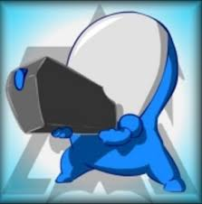
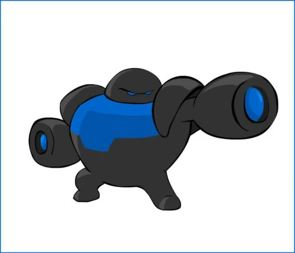
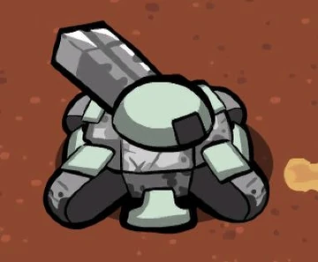
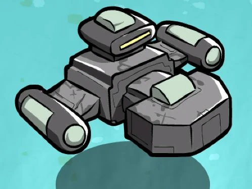

El Dominio Terran emplea unidades militares avanzadas, vehículos pesados y naves de combate.

Infantería básica equipada con rifle Gauss.

Soldado pesado especializado contra blindados.

Tanque transformable de largo alcance.

Nave capital insignia de la flota Terran.